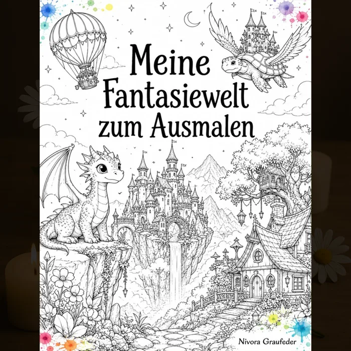

ein Malbuch voller kleiner Abenteuer
Schon mit wenigen Dingen können Kinder in eine andere Welt eintauchen. Ein paar Farben, eine kleine Geschichte und schon beginnt im Kopf eine Reise, die irgendwo zwischen Drachen, Kristallhöhlen, schwebenden Inseln und geheimnisvollen Orten weitergeht.
Genau dieses Gefühl möchte „Meine Fantasiewelt zum Ausmalen“ schenken. Es ist nicht einfach nur ein Malbuch, sondern eher eine kleine Sammlung voller Fantasieorte, die Kinder entdecken, ausmalen und in Gedanken weitererzählen können.
📚 Worum geht es in „Meine Fantasiewelt zum Ausmalen“?
In diesem Buch warten 60 magische Welten darauf, entdeckt zu werden. Jede Seite bringt eine eigene kleine Geschichte mit sich, die Kinder ab 5 Jahren in eine neue Fantasiewelt mitnimmt.
Da gibt es fliegende Schildkröten, geheimnisvolle Kristallhöhlen, schwebende Inseln, mutige Drachen, quirlige Zwergenstädte, ein Drachenpostamt, eine Bibliothek unter dem Meer und viele weitere Orte, bei denen man sofort merkt: Hier darf die Fantasie richtig loslegen.
Besonders schön finde ich, dass jede Geschichte nicht einfach nur abgeschlossen ist, sondern mit einem offenen Gedanken endet. Dadurch können Kinder selbst überlegen, wie es weitergehen könnte. Und genau das macht dieses Buch für mich so besonders, weil es nicht nur zum Ausmalen gedacht ist, sondern auch zum Weiterträumen.
✨ Mehr als nur ein Malbuch
Was mir an der Idee richtig gut gefällt, ist die Mischung aus kurzen Geschichten und Ausmalbildern. Kinder bekommen nicht einfach nur ein Bild vor sich gelegt, sondern zuerst eine kleine Welt, in die sie eintauchen können.
Dadurch entsteht beim Ausmalen gleich ein ganz anderes Gefühl. Man malt nicht nur irgendeinen Drachen oder irgendeine Insel aus, sondern vielleicht genau den Drachen, der gerade eine wichtige Botschaft austrägt. Oder die Insel, auf der ein neues Abenteuer beginnen könnte.
So wird jede Seite ein kleines Erlebnis für sich.
🖍️ Was Kinder in diesem Buch erwartet
Das Buch enthält 60 liebevoll gestaltete Kurzgeschichten, die jeweils eine eigene kleine Fantasiewelt erzählen. Dazu gibt es 60 passende Ausmalbilder, die mit feinen Details gestaltet sind und viel Platz für eigene Farben lassen.
Durch das große Format von 8,5″ × 11″ haben Kinder genug Raum, um kreativ zu werden. Gerade für Kinder ab 5 Jahren ist das schön, weil sie sich beim Ausmalen nicht eingeengt fühlen und ihre Ideen frei ausprobieren können.
Für mich wirkt dieses Buch wie eine kleine Schatzkiste aus Geschichten und Bildern. Man kann jeden Tag eine neue Seite entdecken oder sich einfach die Geschichte aussuchen, auf die man gerade Lust hat.
🌈 Für wen ist dieses Buch geeignet?
„Meine Fantasiewelt zum Ausmalen“ eignet sich besonders für Kinder ab 5 Jahren, die gerne malen, träumen und Geschichten mögen.
Es passt schön für ruhige Nachmittage, kreative Kinderstunden, Regentage oder einfach als kleine Auszeit vom Alltag. Auch als Geschenk finde ich es sehr passend, egal ob zum Geburtstag, zu Weihnachten oder einfach mal zwischendurch.
Denn es ist ein Buch, das Kinder nicht nur beschäftigt, sondern ihnen auch Raum gibt, selbst kreativ zu werden.
💭 Mein Eindruck
Ich finde die Idee hinter diesem Buch wirklich schön, weil hier Fantasie und Kreativität zusammenkommen. Kinder können nicht nur ausmalen, sondern auch eigene Gedanken entwickeln und die Geschichten in ihrem Kopf weiterspinnen.
Gerade diese offenen Schlusssätze machen das Buch besonders, weil sie Kinder dazu einladen, selbst weiterzuerzählen. Vielleicht entsteht daraus eine ganz neue Geschichte, vielleicht wird beim Ausmalen aus einer kleinen Szene ein großes Abenteuer.
Und genau das mag ich an solchen Büchern: Sie geben etwas vor, aber lassen trotzdem genug Platz für die eigene Vorstellungskraft.
🌟 Mein Fazit
„Meine Fantasiewelt zum Ausmalen“ ist ein liebevoll gestaltetes Ausmalbuch für Kinder ab 5 Jahren, das mehr bietet als nur schöne Bilder. Es verbindet kleine Fantasiegeschichten mit kreativen Ausmalmomenten und lädt Kinder dazu ein, eigene Abenteuer weiterzudenken.
Für kleine Entdecker, die gerne malen, Geschichten lieben und sich in magischen Welten verlieren können, ist dieses Buch eine sehr schöne Geschenkidee.
Ein Buch voller Farben, Fantasie und kleiner Abenteuer, die erst dann richtig lebendig werden, wenn Kinder sie mit ihren eigenen Ideen füllen. 🎨✨
📘 Jetzt in die Fantasiewelt eintauchen
Hol dir „Meine Fantasiewelt zum Ausmalen“ – und begleite dein Kind auf eine kreative Reise durch 60 magische Welten voller Drachen, Kristallhöhlen, schwebender Inseln, Zwergenstädte und kleiner Abenteuer, die nicht einfach enden, sondern zum Weiterträumen einladen. Ein Ausmalbuch für Kinder ab 5 Jahren, die gerne malen, Geschichten lieben und ihre eigene Fantasie lebendig werden lassen.
🎨 Jetzt losmalen und weiterträumenIch möchte dir dieses Ausmalbuch ans Herz legen, weil es Kindern nicht nur schöne Bilder zum Ausmalen schenkt, sondern auch kleine Geschichten, die ihre Fantasie anstupsen und zum Weitererzählen einladen.
„Meine Fantasiewelt zum Ausmalen“ nimmt Kinder mit in 60 magische Welten voller Drachen, Kristallhöhlen, schwebender Inseln, Zwergenstädte und vieler kleiner Abenteuer. Es ist ein Buch, das Farbe, Kreativität und Geschichten miteinander verbindet – und dabei genug Raum lässt, damit Kinder ihre eigenen Ideen hineinlegen können.
Ich wünsche euch viele bunte, verträumte und fantasievolle Ausmalmomente. 🎨✨